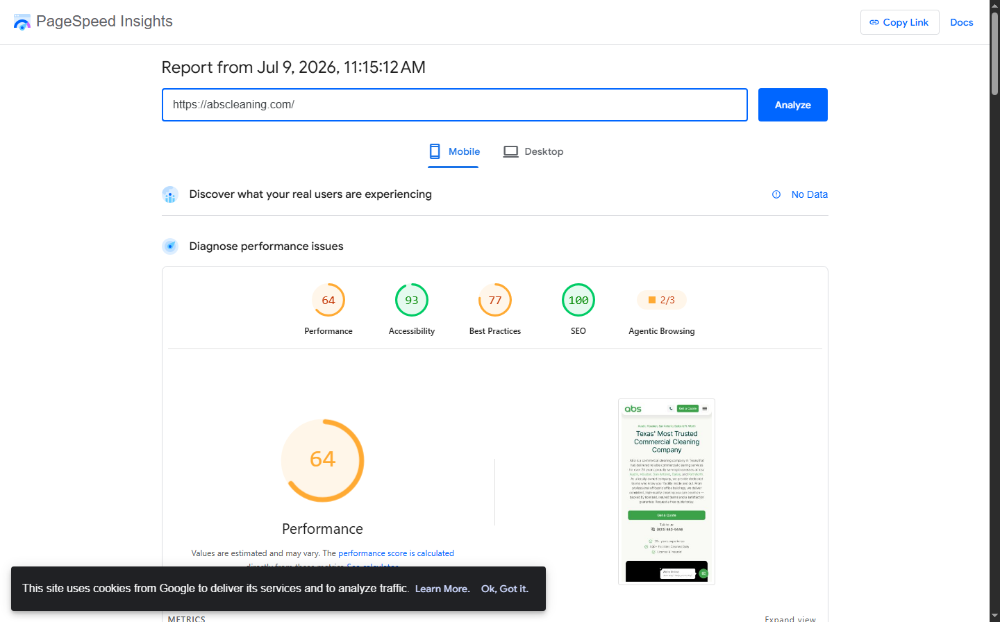

Critical Finding: 4 Duplicate GBP Listings Detected
ABS Commercial Cleaning has 4 separate Google Business Profile listings, splitting 27 total reviews across them instead of concentrating authority on a single profile. This dilution is likely the single biggest factor hurting Local Pack rankings. The strongest listing (18 reviews, 4.9 stars) is geolocated near San Marcos — not Austin. Consolidating to one verified Austin listing should be the top priority.
Tier 1
Game Changers
1 of 9 passing
#01
Visible Address (Brick-and-Mortar) vs Hidden SAB
Fail
Evidence
All 4 GBP listings are configured as Service Area Businesses with hidden addresses. No visible physical address appears on any listing, despite the website displaying 2028 East Ben White Blvd, Austin TX 78741.
Recommendation
If ABS operates from a real office at 2028 E. Ben White Blvd, convert at least the primary Austin listing to show the physical address. Storefront/office listings generally outperform SABs in Local Pack rankings.
#02
Physical Location Within City Boundaries
Pass
Evidence
Website address (2028 East Ben White Blvd, #240-4424, Austin, TX 78741) is within Austin city limits. One of the 4 GBP listings has coordinates in Austin proper (30.296114, -97.73297). However: the listing with 18 reviews is pinned near San Marcos (29.90, -98.09), not Austin. The Austin-specific listing has only 2 reviews.
#03
Google Ads / LSAs
Fail
Evidence
No LSAs or Google Ads appeared for "commercial cleaning Austin TX." ABS does not rank on page 1 organically either. Competitors like ServiceMaster Clean and JK Commercial Cleaning dominate. A Google Ads conversion tracking pixel (googleadservices.com) was found on the site, suggesting past ad campaigns that are no longer running.
Recommendation
LSAs and Google Ads are critical in this competitive market. With zero organic page 1 presence, paid ads are the fastest path to visibility. Reactivate campaigns and consider LSAs for the trust badge benefit.
#04
Keywords in Business Name
Needs Work
Evidence
Business name "ABS Commercial Cleaning" contains the service keyword ("Commercial Cleaning") but no city/location keyword. The name varies across listings — some include "LLC", some do not.
Recommendation
Consider filing a DBA such as "ABS Commercial Cleaning Austin" to include the city keyword. Standardize the name across all listings to eliminate inconsistencies.
#05
GBP Categories (Primary + All Slots)
Fail
Evidence
Primary categories are inconsistent: 3 listings use "Janitorial service" and 1 uses "Cleaning service." No secondary categories are set on any listing. With 9 services offered (carpet cleaning, pressure washing, office cleaning, etc.), many applicable secondary category slots sit empty.
Recommendation
Set primary category to "Commercial cleaning service" (most specific match). Add secondary categories: Janitorial service, Carpet cleaning service, Window cleaning service, Floor cleaning service, Pressure washing service. Audit quarterly for new categories.
#06
Strategic Press Releases
Needs Work
Evidence
One press release found from November 2022 on WGNO/EIN Presswire about "ABS/CBS Offers Commercial Cleaning and Maintenance Services." No recent press releases discovered (nothing in 2025 or 2026).
Recommendation
Publish strategic press releases quarterly. Link to relevant service pages with brand anchors. Topics: expansion news, new service launches, community involvement, milestone anniversaries.
#07
Dedicated, Optimized Service Pages
Fail
Evidence
The website has 9 service page URLs in the sitemap (carpet cleaning, office cleaning, pressure washing, etc.), but every page returns the identical title tag: "Commercial Cleaning Company Texas | ABS Commercial Cleaning" and the same H1. Pages appear to serve the same or nearly identical content regardless of the URL. No service+city differentiation.
Recommendation
Each service page needs a unique title tag with service+city (e.g., "Office Cleaning Austin TX | ABS Commercial Cleaning"), unique H1, unique content with process details, pricing signals, and social proof specific to that service.
#08
Review Velocity
Needs Work
Evidence
27 total reviews across 4 listings (4 + 18 + 2 + 3). The main listing (18 reviews, 4.9 stars) has decent recent velocity: reviews 3 weeks ago, 1 month ago, and 2 months ago. But 27 total reviews split across 4 listings is very weak for a 20+ year business. The Austin-specific listing has only 2 reviews.
Recommendation
Consolidate to 1–2 listings maximum. Implement a systematic review request process for every completed job — one-tap SMS review link. Target 4+ reviews per month on the primary listing.
#09
Extended GBP Hours
Needs Work
Evidence
All listings show Mon–Fri 9:00 AM – 5:00 PM, closed on weekends. One reviewer noted "They answer calls after hours when needed," indicating the business is reachable beyond listed hours but not reflecting this on GBP.
Recommendation
Extend hours to the full window someone answers the phone. If using an answering service, list those extended hours. Being marked "Closed" suppresses rankings during off-hours.
Tier 4
Technical & Content
1 of 7 passing
#23
Title Tags: Service + City First
Fail
Evidence
Every page on the site uses the identical title tag: "Commercial Cleaning Company Texas | ABS Commercial Cleaning." Homepage, service pages, and location pages all share the same title. No service+city differentiation. H1 tags are also identical across pages.
Recommendation
Every service page needs a unique title leading with service+city: "Office Cleaning Austin TX | ABS Commercial Cleaning", "Carpet Cleaning Austin TX | ABS Commercial Cleaning", etc. Location pages need city-specific titles as well.
#24
Structured Data Markup
Needs Work
Evidence
Homepage has Organization schema (correct NAP), WebSite schema with search action, FAQPage schema (4 Q&As), and VideoObject schema. Missing: LocalBusiness schema (should replace Organization), Service schema on service pages. No schema found on individual service pages. Schema name matches GBP but categories don't align.
Recommendation
Replace Organization with LocalBusiness schema. Add Service schema to each service page. Ensure hours, geo coordinates, and service area match GBP exactly.
#25
Mobile-First, Fast, Frictionless UX
Needs Work
Evidence
Good UX elements: sticky header with "Call: (800) 640-9446" button, clickable tel: links, "Get a Quote" popup form. However, PageSpeed is poor: LCP 11.6s (threshold: 2.5s), TBT 360ms (amber). Main culprit: a 9.7MB MP4 video auto-loading on homepage. Total payload: 17.5MB. CLS is excellent at 0.004. SEO score is 100. No CrUX data available.
Recommendation
Lazy-load or defer the hero video. Compress/optimize the video file. Remove unused JavaScript (410 KiB potential savings). Remove 7 unused Zoho preconnect hints. These changes alone could cut LCP dramatically.
#26
Internal Linking Strategy
Pass
Evidence
Good navigation structure. All 9 service pages, 5 location pages, and 6 facility type pages are linked from the main navigation. Service subcategories are accessible from the Services menu. Footer includes links to blog, contact, careers, and all locations. Could improve by adding contextual cross-links within page content (e.g., office cleaning page linking to carpet cleaning).
#27
City / Service-Area Pages
Needs Work
Evidence
5 location pages exist (Austin, Houston, Dallas, San Antonio, Fort Worth). However, the Austin page uses the same title tag as every other page, mentions Austin but has no unique local details, no local case studies, no map embed, no area-specific testimonials, and no local FAQs. Content appears semi-templated across all location pages.
Recommendation
Each location page needs genuinely unique content: real jobs done in that city, local testimonials, area-specific FAQs, embedded Google Map, unique title such as "Commercial Cleaning Austin TX | ABS Commercial Cleaning."
#28
Unique, Experience-Based Content
Fail
Evidence
No pricing information or ranges anywhere on the site. No case studies or project breakdowns. The "Don't Just Take Our Word for It" testimonial section heading exists but no actual testimonials are displayed. Content is generic service descriptions without real-world examples. No photos of actual work in content. FAQ section has only 4 generic questions.
Recommendation
Add real pricing ranges, project case studies with before/after photos, detailed process breakdowns, and populate the testimonials section. Write from firsthand experience — what makes ABS different from dozens of competitors.
#29
GBP Photos (Monthly Refresh)
Needs Work
Evidence
The 18-review listing has owner and interior photos visible. However, the other 3 listings appear to have sparse photo sections. Exact photo count and recency of uploads cannot be fully confirmed, but multiple listings having few or no photos is a concern.
Recommendation
Upload real work photos, team photos, and equipment photos monthly to the primary listing. Aim for 20+ total photos minimum. Fresh photos biweekly is ideal for ranking signals.
Audit Screenshots

GBP Overview — 4 Duplicate Listings

Primary Listing — 18 Reviews, 4.9 Stars
Austin Listing — Only 2 Reviews

GBP Categories — Inconsistent Primaries

SERP — No Ads or Organic Presence

PageSpeed Mobile — LCP 11.6s
Priority Action Plan
Fix Now — Urgent (Weeks 1–2)
- 1 Consolidate 4 GBP listings into 1. Request removal/merge of duplicates via Google. Concentrate all review authority on the Austin-address listing. Correct the pin location to the actual office address.
- 2 Convert primary listing from SAB to storefront. Display the physical address at 2028 E. Ben White Blvd, Austin TX 78741 to unlock full Local Pack eligibility.
- 3 Fix GBP categories. Set primary to "Commercial cleaning service." Add all applicable secondary categories (Janitorial, Carpet cleaning, Window cleaning, Floor cleaning, Pressure washing).
- 4 Write unique title tags for every page. Lead with service+city: "Office Cleaning Austin TX | ABS Commercial Cleaning." No two pages should share a title.
- 5 Reactivate Google Ads / launch LSAs. With zero organic page 1 presence, paid ads are the fastest route to lead generation while organic work ramps up.
Improve Soon — High Impact (Weeks 3–8)
- 6 Rewrite all 9 service pages with unique content, process details, pricing signals, before/after photos, and service-specific testimonials.
- 7 Build a review generation engine. Create a one-tap SMS review link. Request reviews after every completed job. Target 4+ per month on the primary listing.
- 8 Fix site speed. Lazy-load the hero video, compress the 9.7MB MP4, remove unused JS (410 KiB savings), and clean up Zoho preconnect hints. Target LCP under 2.5s.
- 9 Add unique content to location pages. Real local jobs, area-specific testimonials, embedded Google Maps, unique FAQs, and city-specific titles for all 5 location pages.
- 10 Upgrade structured data. Replace Organization with LocalBusiness schema. Add Service schema to each service page. Align hours, coordinates, and service area with GBP.
- 11 Extend GBP business hours to reflect all hours someone answers the phone, including evenings and weekends if applicable.
- 12 Create experience-based content. Add pricing ranges, case studies with before/after photos, populate the empty testimonials section, and expand the FAQ from 4 to 15+ questions.
Maintain — Ongoing
- 13 Upload GBP photos monthly. Real work photos, team photos, equipment shots. Minimum 20+ total, with fresh uploads biweekly.
- 14 Publish quarterly press releases with brand anchor links to service pages. Topics: expansion, new services, community involvement.
- 15 Standardize business name across all platforms. Consider a DBA filing for "ABS Commercial Cleaning Austin" to add the city keyword.
- 16 Add contextual cross-links within page content to strengthen the internal linking strategy already in good shape via navigation.